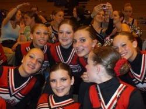
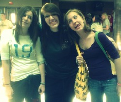

My Hats
Metaphorically speaking I wear many hats throughout my life. Each and everyday I take on very different roles. Everyday I am a sister, a dancer, a student, and a friend. These things are what make me who I am and without my "hats" I don't know where I would be today.
A Sister
I have one sister that means everything to me and her name is Jessica Lynn. She is 17 and about to graduate from high school. I look up to my sister when times are tough and I know that she always comes to me when she is struggling in life. We are more then just sisters, we are best friends. My sister is always there for me and I give her the same support in return. Me and her are like two pees in a pod. Sometimes we have our differences, but without a doubt we get over it quickly.
A Dancer
One of the greatest things that makes me who I am is that I am a dancer. I spend every waking hour outside of school dancing my heart out. Classes are time consuming but it is worth it because I have such a deep passion for it. I feel that dancing is the biggest stress reliever and a great way to get exercise. When I am dancing nothing else matters and all I can think about is the dance. I dance at Glenn's School of Dance and dance on the Varsity Pom Squad. At Glenn's I take part in four different types of dance. These classes are jazz, lyrical, hip-hop, and the greatest of all, ballet. The reason I like ballet so much is that it is so precise and rhythmic. Ballet gives you the strength so you can do well in other types of dance and is a great muscle toner. Being a dancer is greater then being almost anything else in life.
A Student
One of the most important aspects of creating a good life for yourself is that you are a good student. I feel that I am as good as a student as anyone can be. I have this drive during school that is like no other. I set goals for myself like completing all work, tests, and projects to the best of my ability. I think this ambition comes from the fact that I want to be as successful as my sister was during her high school career. Being an overall hardworking student is what I strive for. I feel that if i get this than I can get to any college I plan for.
A Friend
In order for people to befriend you, you have to be friendly yourself. I have some of the greatest friends I could ever ask for. There are three girls in my life that always have my back besides my family. These three girls are Lauren Strange, Annalise Lorge, and Korrin McNeil. The things that make the four of us such great friends is that we all have eachothers' backs. Whenever any of us are in need of a shoulder to cry on one of us will be there in second. Besides these three girls, I try to be the greatest friend I can to everyone I meet. In order to do this I set all judgements aside and be as nice as I would expect someone to be to me. You always hear your parents saying "Treat others the way you want to be treated." and "Don't say anything, if you don't have anything nice to say at all." I really try to follow these two things so that people can look at me whenever they do need a friend.